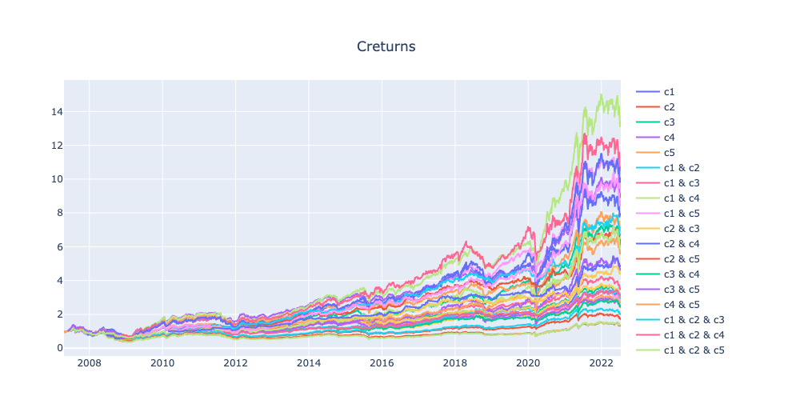
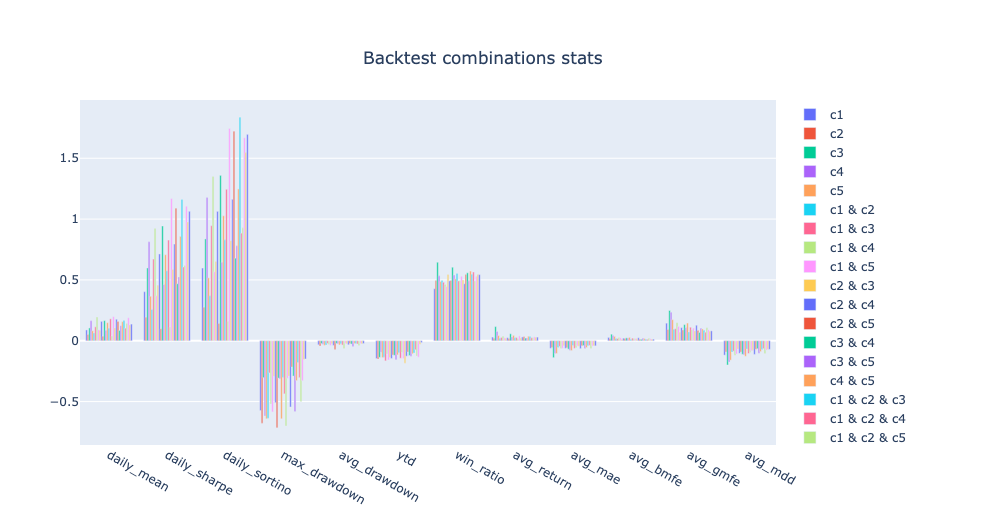
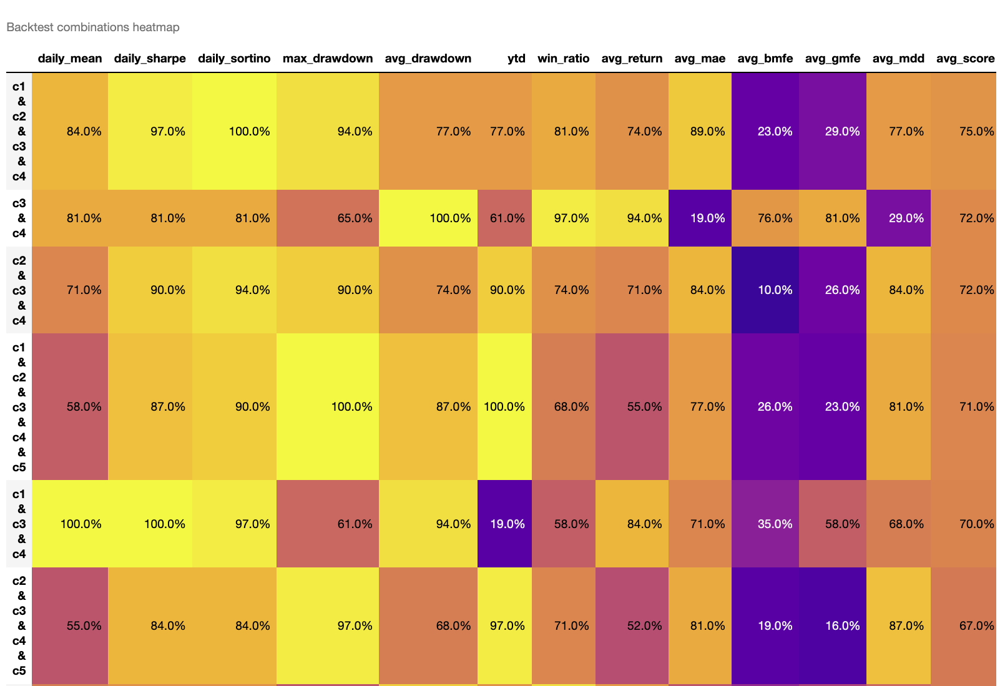

finlab.optimize
finlab.optimize.combinations.sim_conditions
取得回測報告集合
將選股條件排出所有的組合並進行回測，方便找出最好條件的交集結果。
| PARAMETER | DESCRIPTION |
|---|---|
conditions |
選股條件集合，key 為條件名稱，value 為條件變數，ex:
TYPE:
|
hold_until |
設定訊號進出場語法糖參數，預設為不使用。ex:
TYPE:
|
*args |
TYPE:
|
**kwargs |
TYPE:
|
| RETURNS | DESCRIPTION |
|---|---|
ReportCollection
|
回測數據報告 |
Examples:
from finlab import data
from finlab.backtest import sim
from finlab.optimize.combinations import sim_conditions
close = data.get("price:收盤價")
pe = data.get('price_earning_ratio:本益比')
rev=data.get('monthly_revenue:當月營收').index_str_to_date()
rev_ma3=rev.average(3)
rev_ma12=rev.average(12)
c1 = (close > close.average(20)) & (close > close.average(60))
c2 = (close == close.rolling(20).max())
c3 = pe < 15
c4 = rev_ma3/rev_ma12 > 1.1
c5 = rev/rev.shift(1) > 0.9
exits = close < close.average(20)
conditions = {'c1':c1, 'c2':c2, 'c3':c3, 'c4':c4, 'c5':c5}
report_collection = sim_conditions(conditions=conditions, hold_until={'exit':exits, 'stop_loss':0.1}, resample='M', position_limit=0.1, upload=False)
# 策略分組指標報告
# print(report_collection.stats)
report_collection.plot_creturns().show()
report_collection.plot_stats('bar').show()
report_collection.plot_stats('heatmap')
ex1:
report_collection.plot_creturns().show()
繪製折線圖指標分群棒狀圖

ex2:
report_collection.plot_stats('bar').show()
繪製指標分群棒狀圖

ex3:
report_collection.plot_stats('heatmap')
繪製指標分級熱力圖，數值越大為排名越前面，avg_score為指標平均分數，分數越高為評價較正向的策略。

finlab.optimize.combinations.ReportCollection
回測組合比較報告
判斷策略組合數據優劣，從策略海中快速找到體質最強的策略。
也可以觀察在同條件下的策略疊加更多條件後會有什麼變化？
Args:
reports (dict): 回測物件集合，ex:{'strategy1': finlab.backtest.sim(),'strategy2': finlab.backtest.sim()}
get_stats
取得策略指標比較表
指標欄位說明：
'daily_mean': 策略年化報酬'daily_sharpe': 策略年化夏普率'daily_sortino': 策略年化索提諾比率'max_drawdown': 策略報酬率最大回撤率(負向)'avg_drawdown': 策略平均回撤(負向)'ytd': 今年度策略報酬率'win_ratio': 每筆交易勝率'avg_return': 每筆交易平均獲利率'avg_mae': 每筆交易平均最大不利方向幅度(負向)'avg_bmfe': 最大不利方向發生前的"每筆交易平均最大有利方向幅度"，若數值越高，越有機會在停損之前操作停利。'avg_gmfe': 每筆交易平均最大有利方向幅度'avg_mdd': 每筆交易平均的最大回撤率(負向)
| RETURNS | DESCRIPTION |
|---|---|
DataFrame
|
策略指標比較報表 |
plot_stats
策略指標比較報表視覺化
| PARAMETER | DESCRIPTION |
|---|---|
mode |
繪圖模式。
TYPE:
|
heatmap_sort_by |
heatmap 降冪排序的決定欄位
TYPE:
|
indicators |
要顯示的特定指標欄位，預設為將指標全部顯示
TYPE:
|
| RETURNS | DESCRIPTION |
|---|---|
Figure
|
長條圖 |
DataFrame
|
熱力圖 |
Examples:
ex1:
繪製指標分群棒狀圖
ex2:
繪製指標分級熱力圖。
'avg_score': 各指標加總後的平均分數，分數越高為整體評價較正向的策略。
預設以avg_score為排序，數值越大為排名越前面，分數越高為整體評價較優的策略。